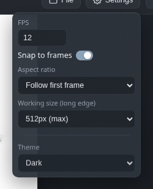

Settings
FPS, snapping, aspect ratios, working size and the colour scheme, all from one menu.
FPS
How many frames per second the timeline plays. Lower values are punchier and cheaper to generate; higher values are smoother. There is no wrong answer, only different amounts of waiting.
Snap to frames
Keeps the playhead and keyframes on whole frames, so times stay tidy. Turn it off for free placement. Your call.
Aspect ratio
Follow the first frame, pick a preset such as 16:9 or 1:1, or set a custom size or a manual ratio like 2.35.
Working size
The long edge of the working canvas, from 512 pixels down to 320. Smaller is noticeably faster to generate, and exports still come out at full resolution.

Theme
Pick the editor's colour scheme: dark, light, lavender, green tea or paper. Your choice is saved in your browser, so it stays even when you switch projects.